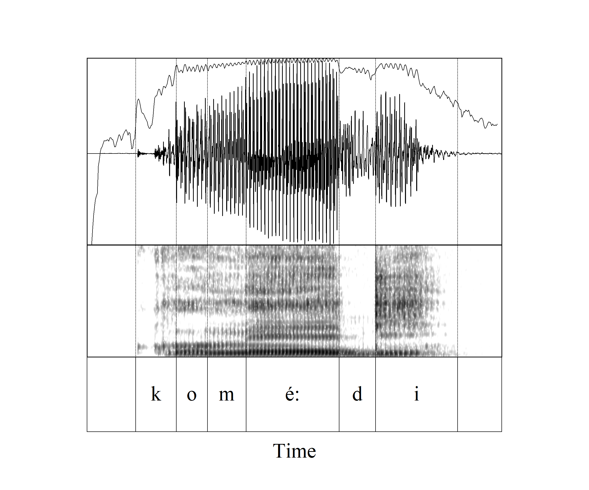
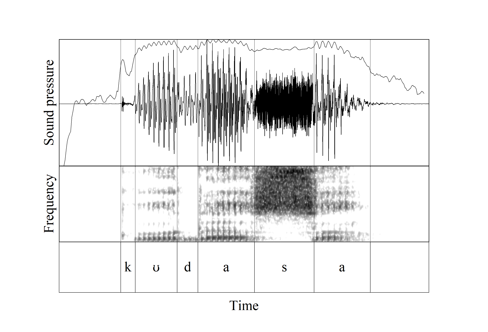
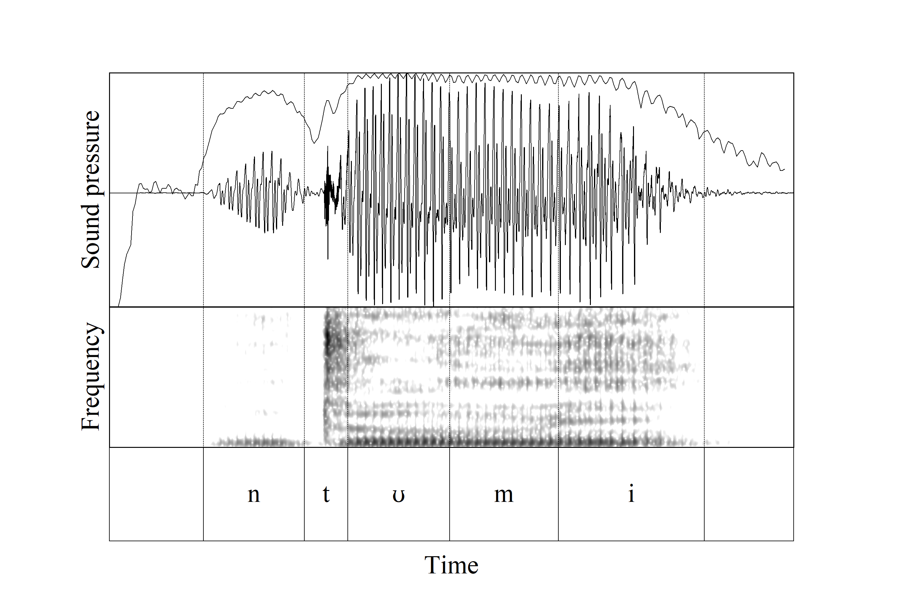
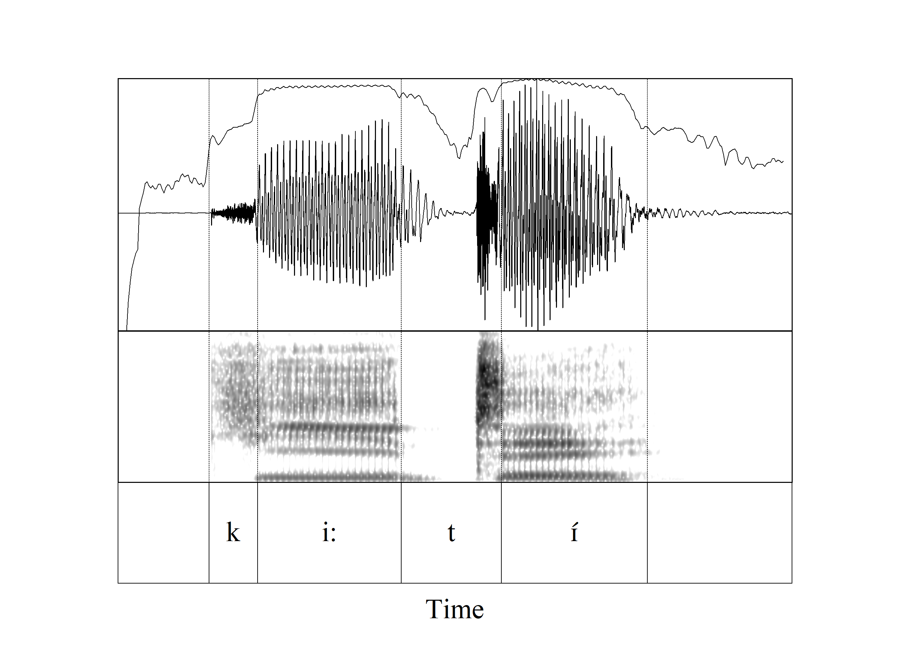

These displays illustrate amplitude properties of voiced and voiceless stops and fricatives.
[d] between vowels. Rapid and strong reduction of amplitude, amplitude spike when consonant is released.
[komé:di]
we added

[kʊdasa]
to increase

[t] between vowels or after a nasal.
[ntʊmi]
I sent

[ki:tɪ́]
now kill!

[z, v] between vowels. Slower decrease in amplitude, and less decrease